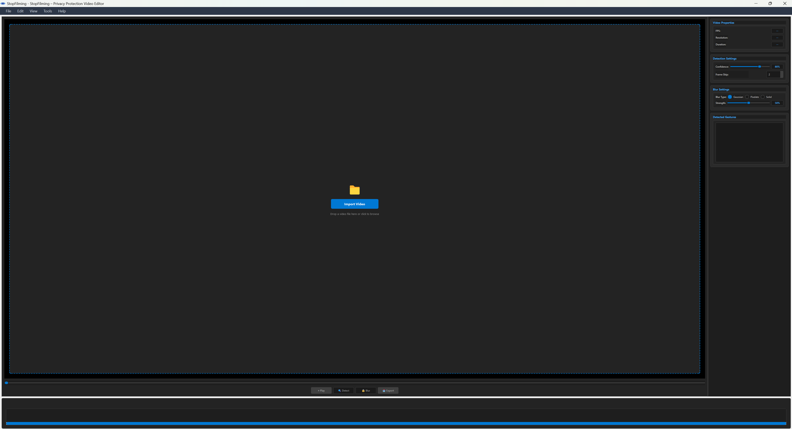

Introduction
Welcome to the documentation for the Privacy-Enhanced Video Editor. This is a desktop application built with Python, PyQt5, and OpenCV, designed to help you edit videos with a focus on privacy.
The application uses a powerful YOLOv8 model to automatically detect people in your videos. You can then use its features to track individuals and automatically blur faces, ensuring privacy before sharing your footage.

Features
- ✓ Person Detection: Uses a YOLOv8 model for high-accuracy person detection in video frames.
- ✓ Face Blurring: Automatically blurs the faces of detected people to protect their privacy.
- ✓ Gesture Detection: Can detect gestures within the bounding box of a person (feature from `detect_gesture_in_person_box`).
- ✓ Video Playback: A custom editor panel for loading, playing, and scrubbing through videos.
- ✓ Export Functionality: A dedicated dialog to export the processed video with settings for quality and format.
- ✓ Modern UI: Built with PyQt5, providing a responsive and native desktop experience.
Installation
To run this application locally, you'll need Python and several packages.
1. Get the Code
You should have all the project files (`main.py`, `view.py`, `model.py`, etc.) in a single directory.
2. Install Dependencies
Based on the imports, you'll need the following packages. You can install them using pip.
pip install PyQt5 numpy opencv-python ultralytics
It's highly recommended to create a Python virtual environment to manage these dependencies.
3. Run the Application
Once the dependencies are installed, you can run the application by executing the `main.py` script.
python main.py
How to Use
The application is controlled via the main menu bar.
File Menu
- Open Video: Opens a file dialog to select a video file for processing.
- Export Video: Opens the export dialog to save your processed video.
- Exit: Closes the application.
Edit Menu
- Keyboard Shortcuts: Opens a dialog displaying all available keyboard shortcuts.
Settings Menu
- Video Settings: (Note: Currently not implemented as per `main.py`)
- Detection Settings: (Note: Currently not implemented as per `main.py`)
- Blur Settings: (Note: Currently not implemented as per `main.py`)
Help Menu
- About: Shows information about the application.
- View README: Displays the project's README.md file.
Code Structure
The project is organized into several key files, separating logic from the user interface.
main.py
This is the main entry point for the application. It initializes the `QApplication` and the `EnhancedVideoEditor` main window. It's responsible for creating the menu bar, actions, and connecting UI signals (like button clicks) to the core logic.
view.py
This file contains all the custom PyQt5 UI components (Widgets). It defines the visual elements of the application, such as the `EditorPanel`, `ProcessingDialog`, `ExportDialog`, and `KeyboardShortcutsDialog`. It handles the "look and feel" but does not contain the core processing logic.
model.py (Inferred)
Though not provided, `main.py` imports `EditorCore` from this file. This file likely contains the application's state and business logic (the "Model" in MVC). It manages the video state, holds the detection results, and performs the heavy lifting, separate from the UI.
utilities.py (Inferred)
`main.py` imports several helper functions from this file. It likely contains standalone functions for performing specific tasks, such as `detect_multiple_people_yolov8`, `PersonTracker`, and `blur_faces_of_person`.
Keyboard Shortcuts
A full list of keyboard shortcuts is available from within the application by navigating to Edit > Keyboard Shortcuts.
TODO: Add Quick Reference
You can edit this HTML file to add your most common shortcuts here for quick reference. For example:
- Ctrl + O: Open Video
- Ctrl + E: Export Video
- Spacebar: Play / Pause